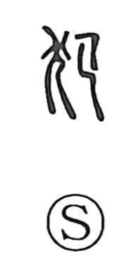

犯

Uncategorized
Kun: okasu | On: han
to violate ・ to commit (a crime) ・ offense
Explanation
A compound graph, 犯 combines the animal sign 犭 with a right-hand element understood as a person bending forward (graphically akin to 巳). Read as a scene, it shows a human stooping over an animal—an image of transgression that old Japanese sources call kemono okaseru tsumi, the sin of violating a beast. From this sense of infringing a taboo or the sacred, the character broadened to mean to violate or to commit, and it now appears widely in words for breaking laws or rules.